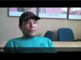

Donate
|  |

The Day Worker Center of Mountain View is a 501(c)3 non-profit that has been supported by grants from organizations such as the Silicon Valley Community Foundation, Philanthropic Ventures Foundation, the Zellerbach Foundation, Los Altos Community Foundation, Wakerly Family Foundation, the Mountain View Voice, the Catholic Campaign For Human Development (just to name a few), and supporters like you. Funding from foundations is wonderful but is not something that an organization can rely on forever. To survive, we must increase the support we get from individuals like you. Can you help us today with an online donation or check?
Prefer to send a check? If so, please mail it to: Day Worker Center of Mountain View, 113 Escuela Ave., Mountain View, CA 94040
(Federal Tax Identification Number: 20-2874108).